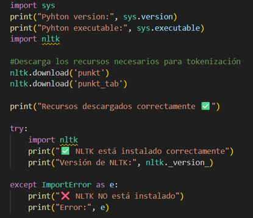
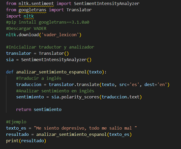
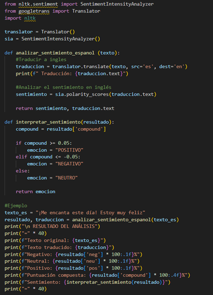
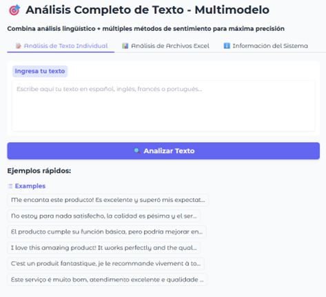
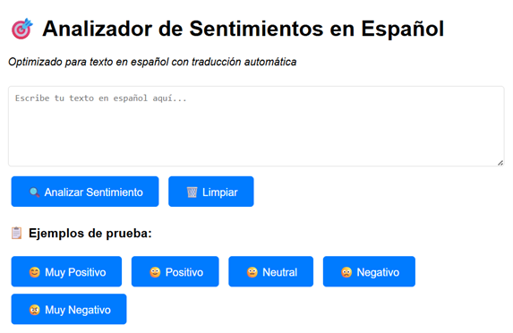
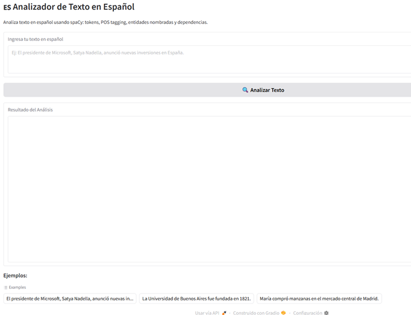
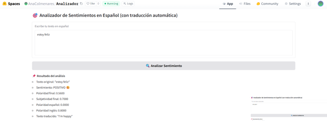
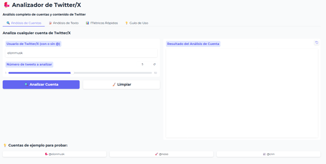

Módulo 1: Procesamiento del Lenguaje Natural (PLN) 🗣️
¿Qué es?
Objetivos Principales
Técnicas Utilizadas
Características y Funciones
Ejercicio 1: NLTK y Análisis de Sentimiento (Español)
Ejercicio 2: Análisis Multimodelo (Gradio, Pandas, etc.)
Ejercicio 3: Análisis de Sentimientos con Flask
Ejercicio 4: Analizador de Texto en Español (Gradio)
Ejercicio 5: Subir Analizador a Hugging Face (Gradio y Deep Translator)
Ejercicio 6: Analizador de Twitter con X Developers
¿Qué es el Procesamiento del Lenguaje Natural (PLN)?
El Procesamiento de Lenguaje Natural es una rama de la Inteligencia Artificial (IA) que se encarga de que las máquinas entiendan, interpreten y generen lenguaje humano (texto o voz).
Para lograrlo, se utilizan técnicas de la lingüística computacional y del aprendizaje automático para analizar y procesar grandes volúmenes de datos de texto o voz, lo que permite a las máquinas extraer información, entender la intención y el sentimiento de los usuarios y facilitar la comunicación entre humanos y máquinas en tiempo real.
Objetivos Principales del PLN 🎯
El PLN persigue diversos objetivos clave para lograr la comprensión y generación del lenguaje:
- Comprender el lenguaje: que la computadora interprete lo que una persona escribe o dice.
- Generar lenguaje:que la máquina pueda responder de forma coherente, como lo hago yo.
- Ánalisis de Sentimiento:Determinar la actitud, opinión o emoción (positiva, negativa o neutral) expresada en un texto.
- Traducción Automática: Convertir texto de un idioma a otro manteniendo el significado y el contexto.
- Extracción de Información (IE): Identificar y extraer información estructurada (como nombres, fechas, lugares, o hechos) a partir de texto no estructurado.
Técnicas Comunes Utilizadas en PLN 🛠️
Las tareas de PLN se dividen generalmente en niveles de complejidad, desde el preprocesamiento hasta el análisis más profundo. Aquí están algunas de las técnicas más utilizadas:
- Tokenización:
Es el proceso de dividir el texto en unidades más pequeñas llamadas tokens (palabras, frases o símbolos). Es el primer paso para preparar el texto para el análisis.
- Normalización (Stemming y Lematización):
Ambas buscan reducir las palabras a su forma base. El Stemming recorta el final de la palabra (ej: "corriendo" -> "corr"), mientras que la Lematización usa el vocabulario (léxico) para encontrar la forma base correcta o "lema" (ej: "corriendo" -> "correr").
- Eliminación de *Stop Words*:
Consiste en remover palabras muy comunes que no aportan un significado sustancial al análisis (ej: "el", "la", "un", "y"). Esto reduce el ruido y el tamaño de los datos.
- Etiquetado de Partes del Discurso (POS Tagging):
Asignar una etiqueta gramatical a cada palabra (ej: sustantivo, verbo, adjetivo, preposición) basándose en su definición y contexto. Ayuda en el análisis sintáctico.
- Reconocimiento de Entidades Nombradas (NER):
Identificar y clasificar entidades del mundo real en el texto, como nombres de Personas, Oanizaciones, Lugares o Fechas.
- Modelos de Lenguaje (LLMs, Transformers):
Algoritmos avanzados (como BERT, GPT) que aprenden las reglas, el contexto y las relaciones del lenguaje a partir de grandes volúmenes de texto. Son la base para la generación de texto y la traducción de alta calidad.
Características y Funciones del PLN ✨
Características Clave del PLN
- Multidisciplinariedad: Combina lingüística, informática y IA.
- Ambigüedad de Manejo: Debe ser capaz de resolver el significado de palabras que pueden tener varios sentidos (ej: "banco" como asiento o entidad financiera) según el contexto.
- Reconocimiento de Contexto: Entiende que el significado de una palabra o frase puede cambiar drásticamente dependiendo de lo que se dijo antes.
- Adaptabilidad: Sus modelos pueden ser entrenados y ajustados para diferentes idiomas, dialectos y dominios específicos (legal, médico, técnico).
Funciones Principales y Aplicaciones
- Análisis de Sentimientos:s Monitorear opiniones en redes sociales, reseñas de productos o comentarios de clientes.
- Chatbots y Asistentes Virtuales: Responder preguntas, realizar tareas y mantener conversaciones coherentes (ej: Siri, Alexa).
- Traducción Automática:(Ej: Google Translate) Permite la comunicación global en tiempo real.
- Resumen Automático: Crear resúmenes concisos de textos largos o documentos.
- Clasificación de Texto: Categorizar documentos (ej: clasificar correos electrónicos como 'spam' o 'promociones').
Ejercicio 1: NLTK y Análisis de Sentimiento en Español (Google Trans)
Descripción: Se instaló y se utilizó la librería NLTK (Natural Language Toolkit) junto con la librería Google Trans para realizar un análisis de sentimiento.
Proceso Clave: Se implementó una lógica para que el análisis de sentimiento, que a menudo está optimizado para el inglés, pudiera funcionar en español. Esto probablemente implicó una traducción temporal del texto al inglés antes de aplicar el algoritmo de NLTK y luego presentar el resultado en español.
Códigos implementados:



Ejercicio 2: Análisis Completo de Texto Multimodelo
Descripción: Se realizó la instalación de las librerias Gradio, Pandas, Spacy, TextBlob, Transformers, Torch y Numpy para la compilación del analizador de texto de sentimientos que combina análisis lingüístico para máxima precisión.
Funcionalidad Principal: El uso de Gradio sugiere la creación de una interfaz fácil de usar. Las demás librerías (spaCy, TextBlob, Transformers, Torc) indican un análisis profundo que pudo incluir tokenización, NER, análisis sintáctico y análisis de sentimiento multimodal.
Visualización de APP:

Ejercicio 3: Análisis de Sentimientos con Flask
Descripción: Se desarrolló un servidor web ligero utilizando Flask para ofrecer una aplicación web y una API dedicada al análisis de sentimiento en español.
Proceso Clave: ste script levanta un servidor Flask que ofrece una app web y una API para analizar sentimientos en español, usando traducción y TextBlob para aumentar precisión.
Visualización de APP:

Ejercicio 4: Analizador de Texto en Español (Gradio)
Descripción: Se utilizó Gradio nuevamente para crear un analizador de texto simple y rápido que mostrara el análisis directamente en español.
Proceso Clave: Se necesita instalar Spacy y OS para el procesamiento y analisis del lenguaje natural (tokens, lemas, gramática, entidades).
Visualización de APP:

Ejercicio 5: Subir Analizador a Hugging Face (Gradio y Deep Translator)
Descripción: Adaptación del analizador de sentimiento anterior para ser alojado en la plataforma de Hugging Face Spaces, utilizando Gradio como interfaz.
Inconveniente y Solución: Se experimentó un error de dependencia con `httpx` al usar Google Trans. La solución fue desinstalarla e instalar Deep_Translator como alternativa para el servicio de traducción.
Cambio de Librería:
pip uninstall googletrans
pip install deep-translator
Logro: Implementación exitosa de un analizador de sentimientos en español mediante la traducción, disponible globalmente en Hugging Face Spaces.
Visualización de APP:

Ejercicio 6: Analizador de Twitter (X Developers)
Descripción: Desarrollo de un analizador que interactúa con la API de X para obtener datos de una cuenta y realizar un análisis de su actividad.
Funcionalidad Detallada:
- Al ingresar la cuenta, analiza métricas: seguidores, número de tweets, me gustas, etc.
- Analiza interacciones con otras personas.
- Permite ingresar y analizar los *tweets* individuales publicados por la cuenta.
Visualización de APP:

Módulo 2 📝
Este módulo está actualmente vacío. ¡Prepárate para añadir tu próximo tema de estudio!
Módulo 3 📝
Este módulo está actualmente vacío. ¡Prepárate para añadir tu próximo tema de estudio!